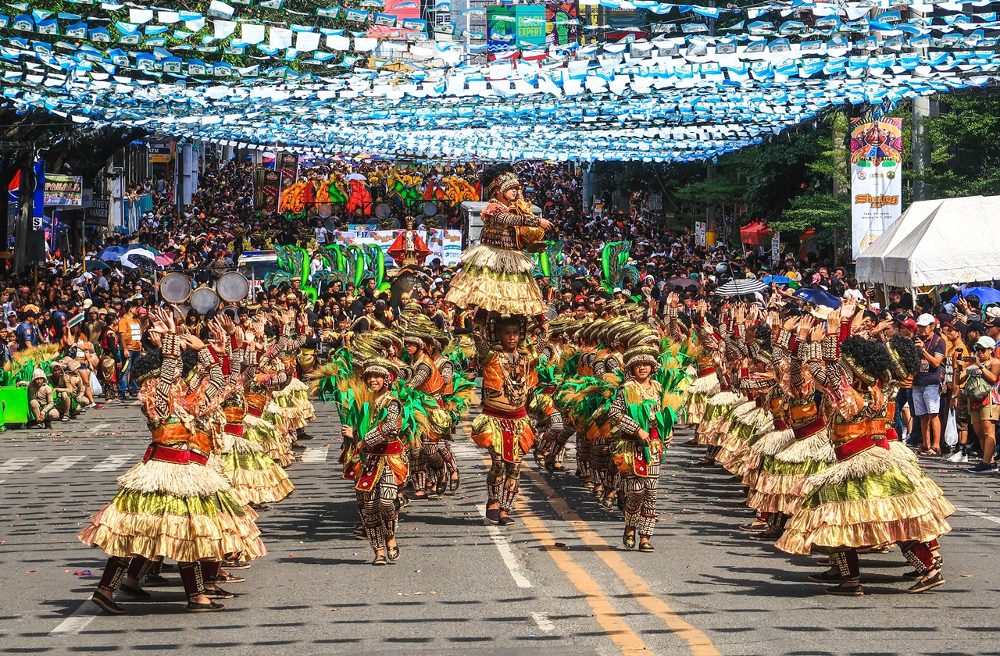
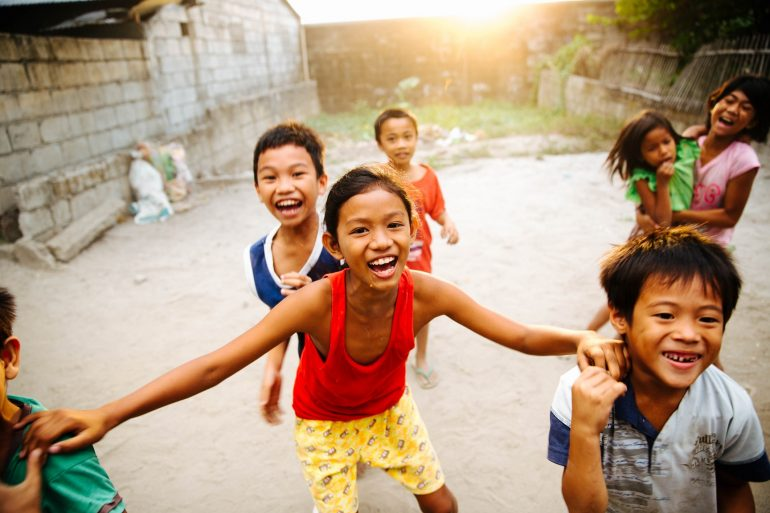
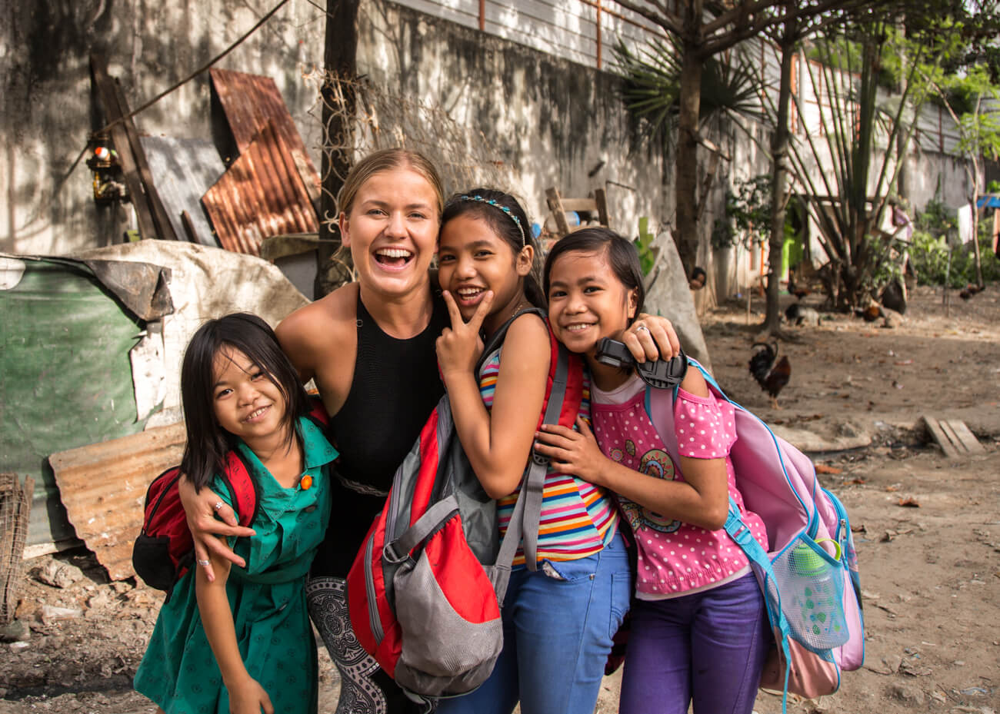

Experience the warm hospitality and friendliness of the Filipino people.
The Philippines is renowned for the genuine hospitality and friendliness of its locals. Experience the warm smiles and welcoming gestures that make visitors feel like part of the community.
Engage with locals in traditional festivities and celebrations, where the spirit of community shines brightly.
Explore the markets and streets, where friendly locals are always ready to share stories, offer assistance, and provide insights about their culture.
Whether you're in bustling cities or remote villages, the friendliness of the Filipino people is a constant that enriches the travel experience.
Immerse yourself in the warmth and camaraderie of the Philippines and create lasting memories with its friendly locals.